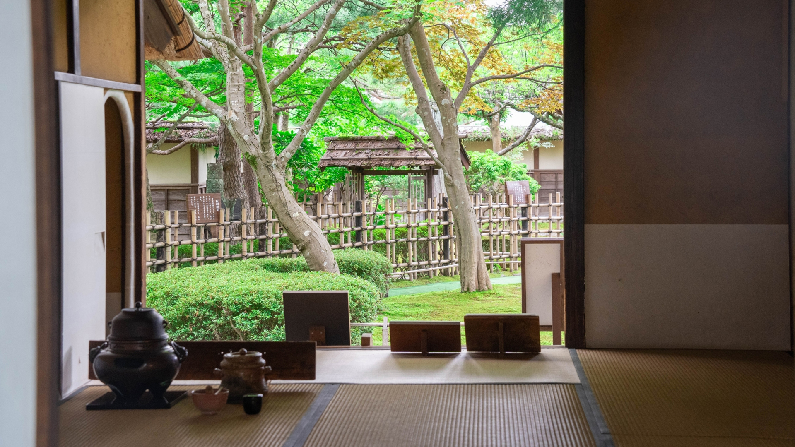

教室介紹
鄭姵萱歷時兩年精心打造的宗萱茶道學苑，融合日式傳統與現代禪風，營造出台北少有的多功能和風教室。學苑風格鮮明，特別聘請日本首席建築藝術大師親自操刀，從環境規劃到細節裝潢，皆充滿日式庭園的氛圍，讓學員如置身日本茶道本場，深刻體驗純正的茶道文化。

鄭姵萱歷時兩年精心打造的宗萱茶道學苑，融合日式傳統與現代禪風，營造出台北少有的多功能和風教室。學苑風格鮮明，特別聘請日本首席建築藝術大師親自操刀，從環境規劃到細節裝潢，皆充滿日式庭園的氛圍，讓學員如置身日本茶道本場，深刻體驗純正的茶道文化。
為貫徹環保健康概念，教室全面採用日本進口環保綠色建材，牆面以具調溫、除濕功能的珪藻土打造，搭配具吸音與淨化空氣效果的負離子天花板，整體空間舒適宜人。舞蹈區更使用高級實木軟性地板，提供安全、護膝的學習環境。
學苑裡設有台灣罕見的標準「地爐」與獨立「水屋」，提供最專業完整的茶道教育環境。此外，教室更巧妙運用隱藏式收納空間與可拆裝式牆面，實現茶室與舞蹈區空間的靈活轉換，配合獨創的自動升降桌設備，提升初學者的便利性與舒適性，打破了茶道必須長時間跪坐的刻板印象。透過靈活多元的教學空間設計，讓更多人能以自在、親切的方式進入茶道世界，專注於茶道的美學涵養與精神內涵。
教室內還配置立禮桌椅設備：御園棚、點茶盤，學員可依個人需求與身體狀態自在選擇坐禮或立禮進行學習，享受無壓力的專業教學環境。除此之外，頂樓游泳池畔更可舉辦專屬茶會活動，眺望101大樓美景，結合奢華與典雅，展現學苑獨一無二的特色。
我們的商演及包場經驗豐富，且教室環境開闊，最多可容納50位學員。茶會流程與課程內容都可進行客製化調整，是學習茶道的最佳場所，更是一個身心靈全面提升的雅緻空間。
宗萱茶道學苑提供專業的日本茶道課程及和服著裝課程，無論您是新手入門，或希望考取資格證，這裡都能為您提供最專業的指導。
120分鐘 / 堂
週一｜13:00–15:30
週四｜13:00–15:30／18:30–21:00
週六｜10:00–12:30／13:00–15:30
單堂體驗：NT$1,300／堂
月繳方案（三堂）：NT$3,300／月
和服不只是服飾，更是承載著深厚的文化底蘊。本課程從最基礎的浴衣穿法教起，循序進入正式和服（小紋、訪問服等）穿搭實作，並輔以和服歷史、場合配件等知識教學。課程結束後可報考日本「京都きもの學院」證照，取得專業認證。
個人班（１～２人）90分鐘
團體班（３人以上）120 分鐘
課程皆為一對一指導，可依老師時間彈性安排，歡迎洽詢。(若需和服或小物租借請於報名時一併告知，將酌收清潔費300-500元/堂)
我們提供商業茶道體驗、企業包班與場地租借服務，將茶道文化融入現代生活，適用於：
聯繫我們，量身打造專屬課程！
預約課程或諮詢請私訊Facebook粉專：宗萱茶道學苑
當然可以！我們的課程從基礎開始，無需任何相關經驗，老師會一步步帶領您學習。
我們的教室皆設有專業的立禮設備，您不必擔心長時間跪坐的問題。我們的目標是讓每位學員都能輕鬆享受茶道的學習過程。
上課時會提供所有需要的茶道具，您可以放心來上課喔！等到之後如果有興趣、想要擁有自己的茶具，再慢慢挑選也沒問題。
第一次上課時，如尚未有和服或小物，我們提供現場租借，清潔費為300-500元/堂。建議後續自行準備個人和服，才能更充分練習與進步。租借的和服僅限課堂上使用，無法帶回家喔。如有購買需求，老師也能提供選購建議。
為了讓大家在課堂上可以更專心投入學習，我們暫時不開放錄影喔。不過別擔心，課後可以趁記憶還新鮮的時候，自己練習並錄影記錄，這樣不但能幫助回顧，也能讓進步更快呢！
請儘量準時到場，如有遲到情形請事先聯絡。若延誤時間過長，可能會影響當天的學習進度。
若因特殊情況無法出席，請私訊Facebook粉專：宗萱茶道學苑進行課程調整或補課安排，但須配合老師空檔喔！
每位學員進步速度不同，建議持續參加課程、課後練習。一般來說，基礎盆略點前課程大約需學習6堂，而進階課程可能需要３個月或更長的時間。我們強調的是學習過程中的專注和深入，而非急於完成。
可以報名單堂體驗課程喔！但本教室課程設計為循序漸進制，建議完整參加系列課程，以累積系統性的學習效果。
如果有需要，課程修業完畢後可以向老師申請！茶道部分可協助申請日本裏千家官方資格證書，和服課程則可以申請和服著裝證照。